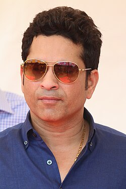

Sachin Tendulkar (born 24 April 1973) is a former Indian international cricketer and is widely regarded as one of the greatest batsmen of all time. He played for the Indian national cricket team for more than two decades and set numerous world records during his career. Tendulkar made his international debut at the age of 16 and quickly became one of the most respected players in world cricket. He holds the record for the most runs in both Test cricket and ODI cricket. He is also the first player to score 100 international centuries. Due to his immense contribution to Indian cricket, he is often called the “God of Cricket”.
